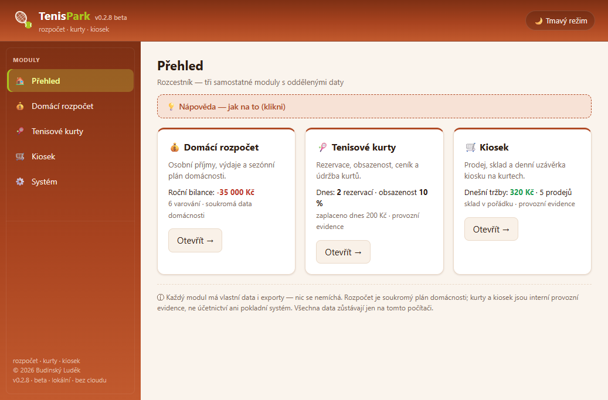
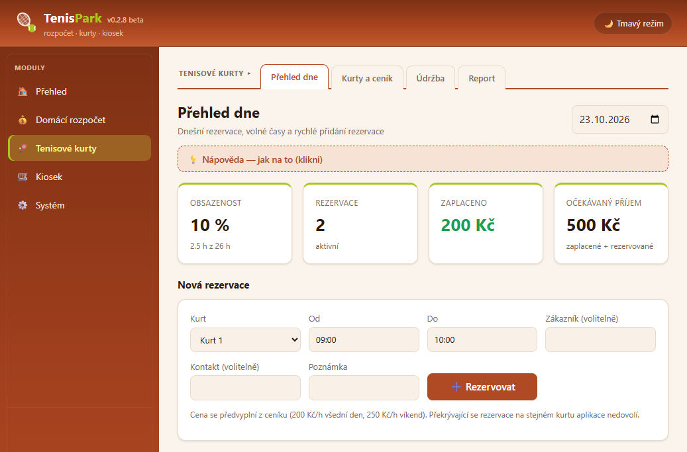
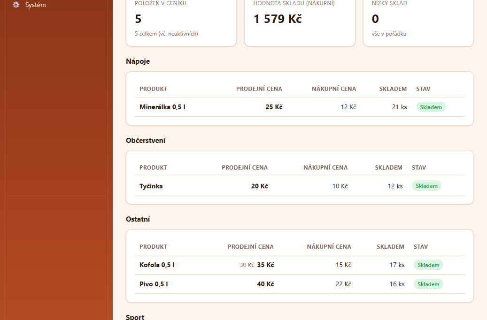
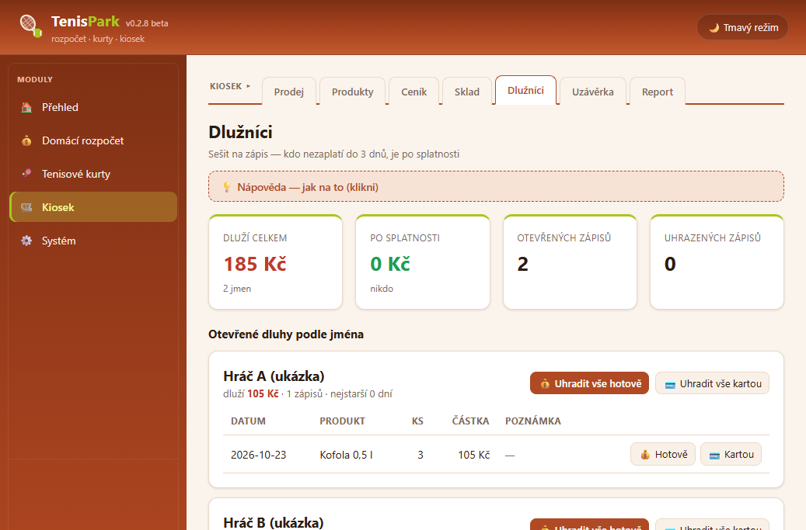
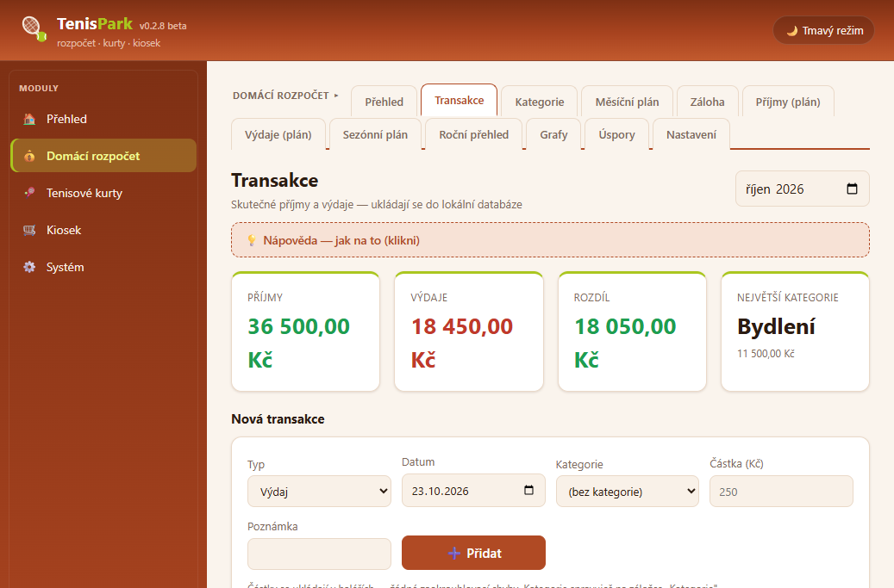
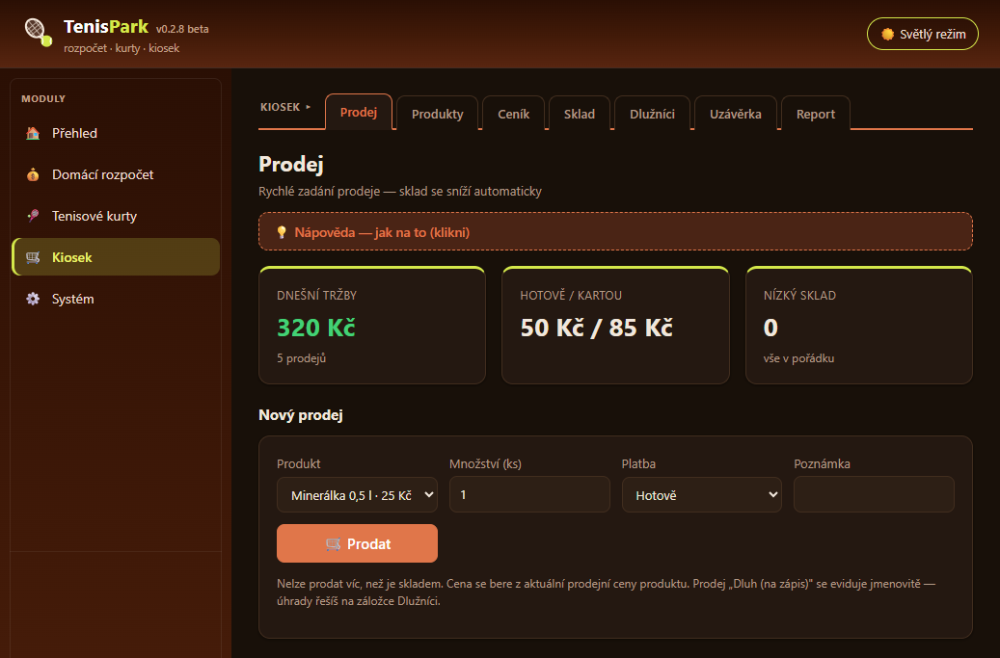
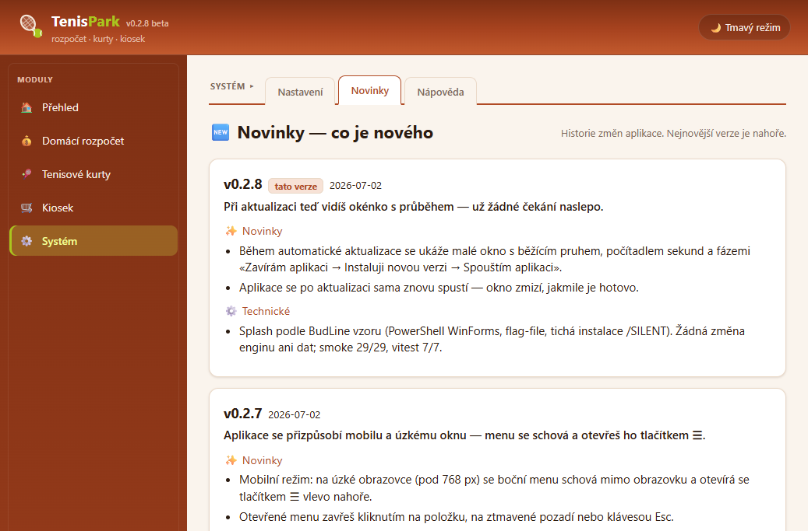
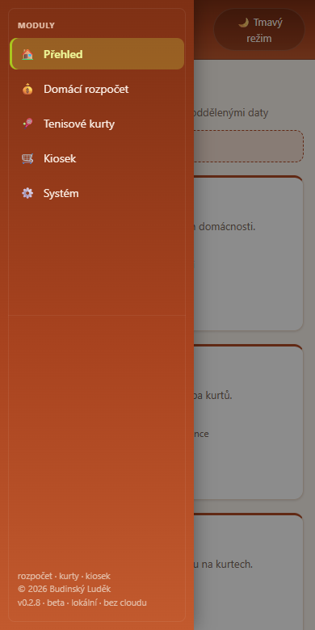

🎾TenisPark
Un'unica app per tutto un piccolo circolo di tennis: budget domestico, prenotazioni dei campi e chiosco con snack. Invece di tre quaderni e una calcolatrice — tutto in un unico posto, sul PC, senza internet. Niente cloud, niente collegamento bancario, niente pagamenti online.
React TypeScript SQLite Tauri (Windows)
Una visita pratica in video
TenisPark — prenotazioni dei campi, chiosco e budget · 9:33. Video con commento in ceco.
Cosa fa
Perché è nata: chi gestisce qualche campo da tennis con un chiosco lo sa bene: prenotazioni in un quaderno, "sul conto" (chi ha bevuto cosa e non ha pagato) in un altro, la sera il conteggio della cassa con la calcolatrice e i soldi personali in un terzo. TenisPark unisce tutto in un'unica app che può usare davvero chiunque — ogni pagina ha una guida espandibile "come si fa".
Campi da tennis: le prenotazioni si inseriscono in pochi clic — campo, da–a, nome. L'app non permette due persone sullo stesso campo alla stessa ora, il prezzo si precompila dal listino (diverso per feriali e weekend), dopo il pagamento si clicca "Pagato". In più registro della manutenzione (righe, irrigazione) e report di occupazione e incassi per giorno e mese.
Chiosco: vendita con magazzino che si controlla da solo — non si può vendere più di quanto c'è in magazzino e l'app avvisa quando qualcosa sta finendo. Una funzione speciale è il quaderno dei debitori: chi non paga subito viene segnato "sul conto" con il nome, e chi non paga entro 3 giorni diventa rosso. La sera si fa la chiusura giornaliera — l'app confronta quanto dovrebbe esserci in cassa con quanto c'è davvero. Quando cambiano i prezzi, il vecchio prezzo resta visibile barrato accanto al nuovo.
Budget domestico: entrate e uscite personali come scontrini, categorie (cassetti), limiti mensili "quanto voglio spendere per il cibo" e in più una sezione di pianificazione annuale per il lavoro stagionale — quanto mettere da parte in estate perché l'inverno torni in pari.
Tutto in locale e al sicuro: i dati stanno in un database SQLite solo sul PC, si salvano con un clic in un file con checksum e il ripristino mostra sempre prima un'anteprima. L'app ha un aspetto chiaro e scuro nei colori della terra rossa.
Funzioni principali
- Prenotazioni senza collisioni — l'app semplicemente non permette una doppia prenotazione dello stesso campo; listino feriale/weekend, stati Prenotato / Pagato / Annullato / Non presentato.
- Chiosco con magazzino — la vendita riduce da sola il magazzino, controlla le scorte minime, non si può vendere più di quanto disponibile. La chiusura giornaliera confronta la cassa con gli incassi.
- Quaderno dei debitori — consumazioni "sul conto" con il nome, suggerimento dei nomi, dopo 3 giorni senza pagamento "scaduto" in rosso, saldo con un clic.
- Listino con prezzo vecchio e nuovo — dopo un rincaro il vecchio prezzo resta barrato accanto al nuovo, con lo storico di tutte le modifiche.
- Budget domestico — transazioni in centesimi (niente errori di arrotondamento), limiti mensili per categoria con avviso "Superato", piano della stagione.
- Backup con checksum — un clic, ripristino sempre tramite anteprima e conferma; prima del ripristino i dati attuali vengono messi da parte automaticamente.
- Guida per tutti ovunque — ogni pagina ha una "💡 Guida — come si fa" espandibile in linguaggio semplice, senza gergo tecnico.
- Mobile e finestra stretta — su uno schermo stretto il menu laterale si nasconde e si apre con il pulsante ☰; invariato sul computer.
- Novità e cronologia — dopo un aggiornamento compare una volta il riepilogo delle modifiche e nel menu c'è l'intera cronologia delle versioni.
- App per Windows — la finestra desktop avvia e chiude da sola il proprio server locale; oppure si può aprire con un doppio clic nel browser.
Anteprime








Installazione (beta privata)
🔒 L'app non è scaricabile pubblicamente. Qui non troverai l'installer, di proposito — mando il link di persona a chi do l'applicazione. Il numero di versione in questa pagina resta: si compila da solo dalla stessa fonte da cui l'app installata prende gli aggiornamenti silenziosi.
🔒 L'installer è protetto da password — la condivido personalmente; sul web non c'è e non ci sarà. Senza password nessuno può aprire l'installazione.
🛡️ Usi Avast o AVG? Potrebbe bloccare silenziosamente l'installer (Windows poi dice "accesso al file negato"). Apri l'antivirus → Quarantena → ripristina il file e aggiungi un'eccezione, poi riavvia l'installer.
Stato
BETA — beta privata per gli amici (versione 0.2.8, luglio 2026). App per Windows con installer.
- L'installer è protetto da password — l'app la ricevono solo le persone a cui do personalmente la password. Sul web non c'è nessuna password e non ci sarà mai.
- Gli aggiornamenti funzionano come nelle mie altre app — l'app controlla da sola le nuove versioni e dopo la conferma si aggiorna silenziosamente, mostrando una piccola finestra di avanzamento. Non serve scaricare nulla a mano.
- Nota su Windows SmartScreen: l'app non è ancora firmata con un certificato, quindi Windows può mostrare un avviso "editore sconosciuto" durante l'installazione. Va bene così — si continua con "Ulteriori informazioni → Esegui comunque".
- Tutti i dati restano solo sul PC. L'app non è una contabilità né un sistema di cassa — è un aiutante operativo.